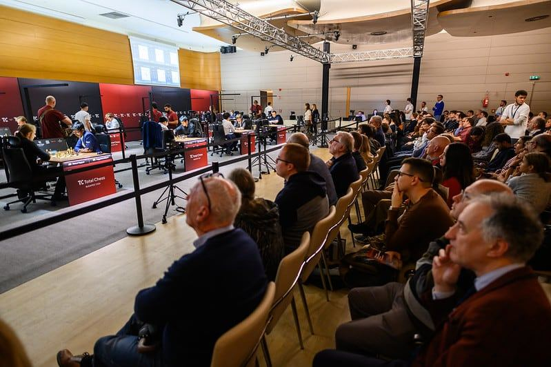

Jugar mejor o vender más, el nuevo debate del ajedrez de élite

Varias estrellas se estresan por los acelerados controles de tiempo en el Total Chess de Budapest para aumentar el número de espectadores
El ajedrez todavía arrastra la herencia de la Unión Soviética (URSS), donde fue una pasión nacional hasta su desintegración, en 1991. La mercadotecnia, el valor comercial o la rentabilidad eran conceptos muy extraños en el país más grande del mundo. Ahora, la empresa Norway Chess, organizadora del nuevo circuito Total Chess (un triatlón de partidas clásicas, rápidas y relámpago) ensaya conceptos revolucionarios en el torneo de Budapest . Pero muchas de las grandes estrellas pretenden algo muy difícil: preservar la alta calidad de las partidas y ganar más dinero a la vez.